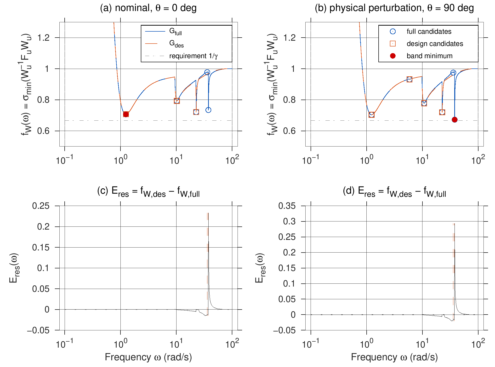
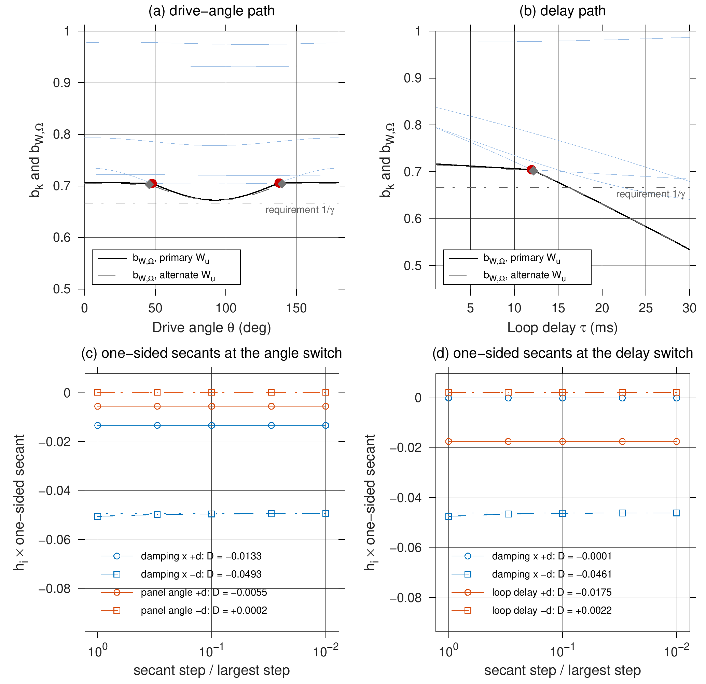
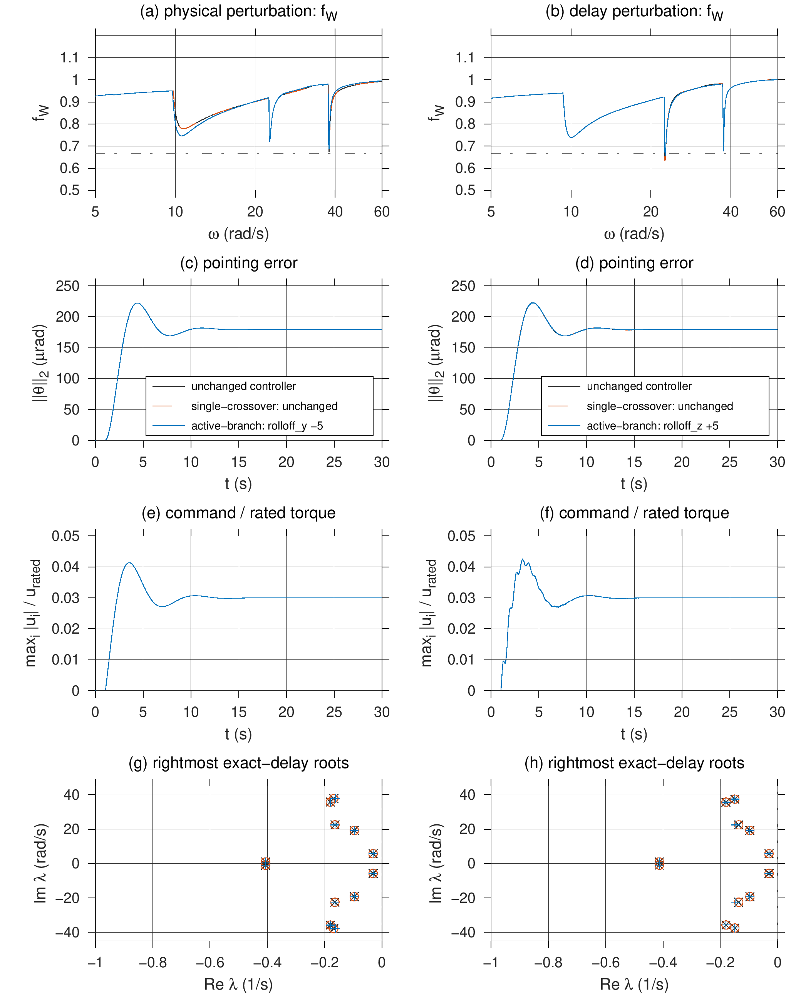
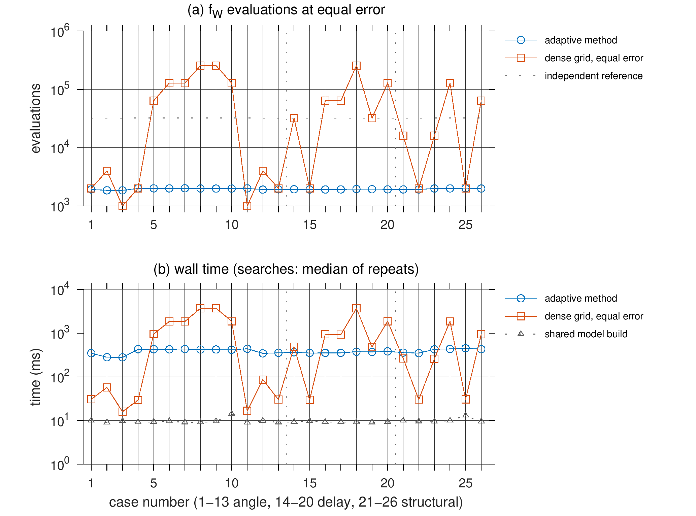
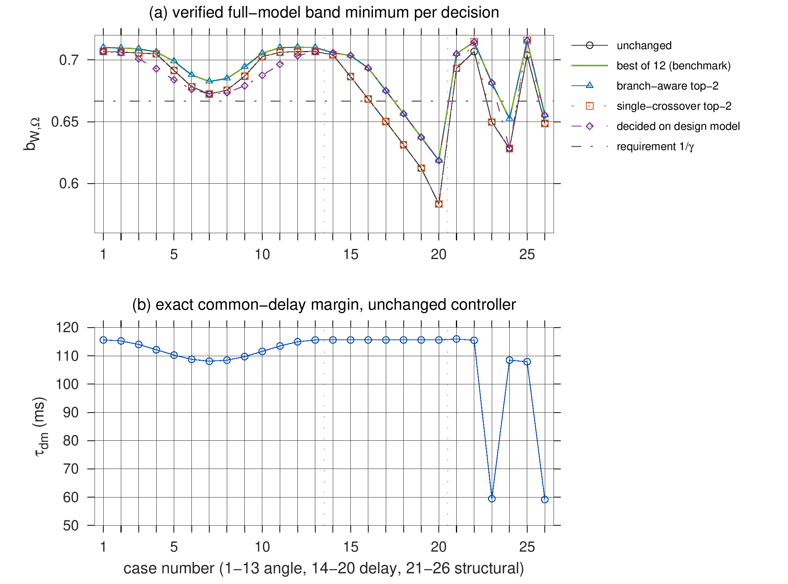
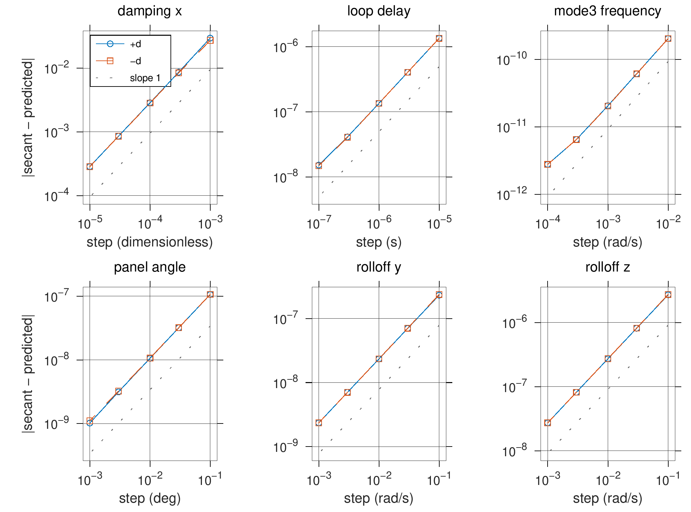
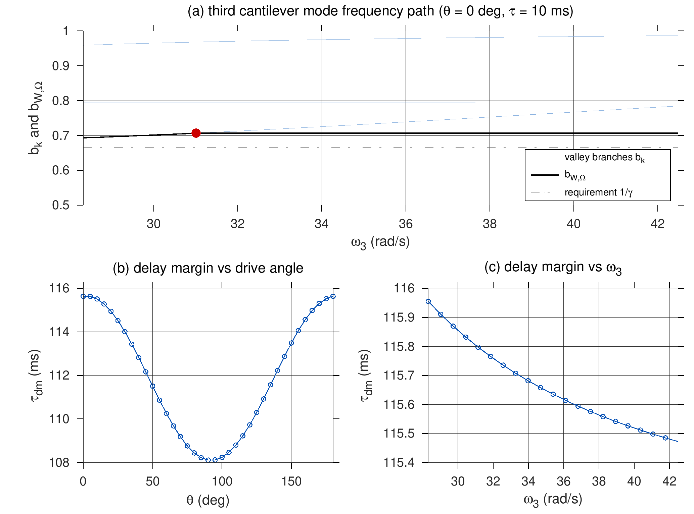

柔性航天器闭环裕度竞争的活动低谷跟踪与整改方向判定
稿件 V5.3 的仿真程序 v4：评审结论、运行方法与全量运行结果（GNU Octave 10.3.0，898 s）
全部代码（GitHub）
下载全部文件（ZIP）
v3 评审与修改方案
README（运行说明）
Table 1 与 Table 2
完整报告 report.txt
图注 figure_captions.txt
运行方法（MATLAB R2015a 及以上，无需工具箱）
cd my-webpage % 进入含 run_terra_study.m 的文件夹
run_terra_study('check'); % 模型自检，几秒
run_terra_study('quick'); % 全流程冒烟测试，约 5 分钟
run_terra_study('full'); % 发表用全量运行，约 15 分钟
每次运行在当前文件夹下新建 terra_results_v4_<时间戳> 输出目录。代码已在 GNU Octave 10.3 中完整运行；尚未在 MATLAB R2015a 上实际运行，建议先跑 check 和 quick。
主要结果
| 项目 | 结果 |
|---|---|
| 名义工况 0°、10 ms | b = 0.70677（1.2456 rad/s），精确时延下稳定，时延裕度 115.6 ms；保证增益裕度 10.66 dB、相位裕度 41.4° |
| 驱动角 90° | b = 0.67241，出现在 37.890 rad/s 的残余模态谷；设计模型给出 0.70375，看不到这个瓶颈 |
| 确认的主导切换 | 驱动角 47.70957°、137.72840°；时延 11.94162 ms；第三悬臂模态 31.0062 rad/s |
| 需求违反 | 时延 17–30 ms 时 b < 2/3（14/30 个路径点）；中心惯量 ×0.8 时 b ≈ 0.649；第三模态 ×0.8、90° 时 b = 0.628 |
| 整改规则（26 例，Top-1 / Top-2 找到最优） | branch-aware 17 / 26；spectrum-aware 22 / 26；字面 active-set 8 / 16；常规单穿越 2 / 2 |
| Table 2（等误差对比） | 两种方法都检出 140/140 个谷；最大误差 3.3e-16 对 7.8e-7；评估次数中位数 1941 对 32000；墙钟时间中位数 380 ms 对 486 ms（Octave，同一机器） |
| 切换位置误差 | 方法 ≤ 1.5e-12° 与 1.1e-16 s；密网格最大 7.3e-4° 与 8.5e-10 s |
| Table 1 整改 | 90°：rolloff_y −5，b 0.6724 → 0.6826；20 ms：rolloff_z +5，b 0.6314 → 0.6565（仍低于 2/3） |
图







每张图另有矢量版 EPS，位于 results_octave_full/figures/。数值与图注的完整版本见 report.txt 和 figure_captions.txt。